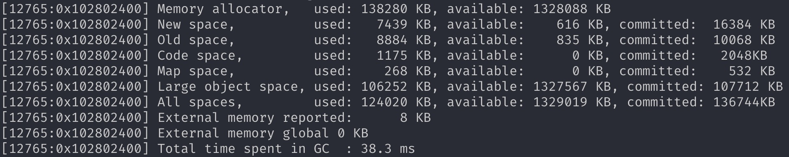

V8 垃圾回收
WHAT
还用讲？
WHY
你为啥要收拾家？
- 内存空间是有限的，而且非常珍贵
- 代码写的屎
HOW
你怎么收拾家？
Stop-The-World
- 熊孩子乱跑？
- 产生新垃圾
- 拿走旧垃圾
弱分代假设
死的快死，活的永生
- 生活垃圾、快递盒子
- 有些东西隔几天会扔一次
- 文件、手机盒、前女（男）友的信
- 有些东西大扫除（搬家）才会扔掉
- 有些东西不会扔
一些概念
内存中的对象
- 头 header
- 域 field
- 域又分指针和非指针
根对象
Root
- 当前作用域
- 全局对象
- 浏览器对象
传统算法
- Mark-Sweeping
- Mark-Compact
写屏障
Write Barrier
空间分类
New Generation
Scavenge 算法
Old Generation
Mark-Sweep/Mark-Compact
Scavenge
Cheney于1970年发表
- marking 标记
- evacuating 疏散
- pointer-updating 晋升


具体处理过程详解
效率？
- 存活对象很少
- To Space 按时间排序
- 基本在 1ms 以下
如果有来自 Old Space 的引用？
使用写屏障记录
Orinoco
主要优化老生代
- 增量标记
- 惰性/并发/并行清除
增量标记产生遗漏
三色标记算法
Tri-Color Marking

依然存在遗漏？
所有写入对象直接标灰
Q&A
- EOF -